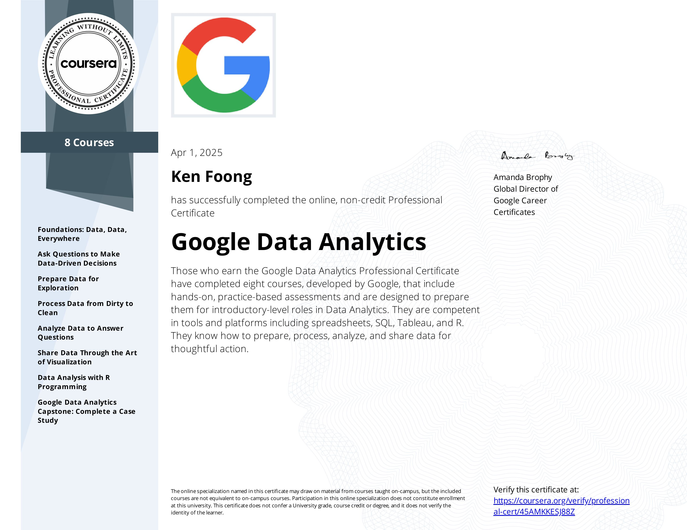
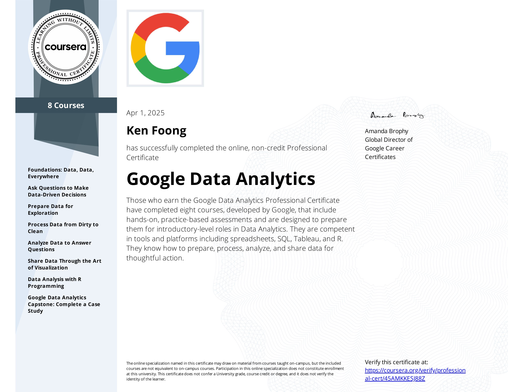

About Me

I'm a diploma student in Infocomm & Security at Nanyang Polytechnic. I specialize in cybersecurity, cloud computing, and full‑stack development. AWS‑certified, I’m passionate about building secure, scalable systems.
Cybersecurity | Programming
üìÑ Download Resume
I'm a diploma student in Infocomm & Security at Nanyang Polytechnic. I specialize in cybersecurity, cloud computing, and full‑stack development. AWS‑certified, I’m passionate about building secure, scalable systems.
 


I’m currently pursuing a Diploma in Infocomm & Security at Nanyang Polytechnic. I’ve earned multiple cybersecurity and cloud certifications, and I’m AWS-certified. I also serve as an Officer in St John Brigade Singapore, instructing cadets in first aid and leadership.
Nanyang Polytechnic – Diploma in Infocomm & Security (2023 – Present)
Bukit Panjang Govt. High School – GCE 'N' Levels (2019 – 2022), Raw: 9, Net: 7, 4 Distinctions
RedMart – Warehouse Packer (2023)
Invader – Flyer Distributor (2023)
Date of Birth: 12 Jan 2005
Gender: Male
Nationality: Singaporean
Marital Status: Single

Click for more details

Click for more details
My digital portfolio is designed to go beyond aesthetics, providing a comprehensive narrative for each featured project that captures my technical growth, problem-solving approach, and impact. Each project section is thoughtfully curated with the following elements:
This layered storytelling allows visitors—be it hiring managers or collaborators—to not only see my technical portfolio but to understand the journey, skills, and mindset behind each solution. It bridges the gap between code and communication, showing the true depth of my capabilities.